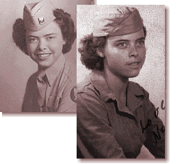
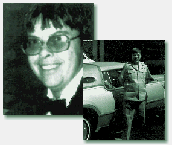

| HOME | SITE MAP |
We mourn the passing of world War II veteran, Johnnie Phelps, a brave, wonderful, kind and generous woman, who later headed the Los Angeles chapter of the National Organization for Women, providing key strategic support and morale for the infamous 1980 lesbian harassment and witchhunting incident aboard the Norton Sound. Way before Ellen, Johnnie stood up to then General Eisenhower, outing herself as a lesbian. The story appears in Randy Shilts' masterpiece of investigative journalism, Conduct Unbecoming, and ApolloMedia's follow-up CD-ROM of the same name, excerpted below.
Your courage was inspirational to a generation of women whose lives you touched, and for whom your ideals and bravery stood as a firm and welcoming beacon in overwhelming and dangerous darkness. Our deepest regrets to Grace Bukowski.
The world is a lesser place without you in it Johnnie. Rest in Peace.
Clinton Fein
ApolloMedia
In gay veterans’ circles, WAC Sergeant Johnnie Phelps became legendary for a conversation she had with Eisenhower when she served on the general’s staff during the postwar occupation of Europe. Phelps admired Eisenhower as a soldier’s soldier who genuinely cared for his troops and would never order them to do something he would not do himself. Out of respect for Eisenhower, Phelps would never have lied to him, which was why she knew how to answer the day he called her into his office and said he had heard reports that there were lesbians in the WAC battalion. He wanted a list of their names, he said, so he could get rid of them. That, Phelps suspected, would be a tall order, since she estimated 95 percent of the WAC battalion of nine hundred women at that headquarters was lesbian.
“Yes, sir,” Phelps said to the general, according to her later account. She would make the list, if that was the order. Then she reminded Eisenhower that the WAC battalion at his headquarters was one of the most decorated in the Army. It performed superbly, had the fewest unauthorized absences, the least number of venereal-disease cases, and the most infrequent number of pregnancies of any WAC group anywhere. Getting rid of the lesbians would mean losing competent file clerks, typists, and a large share of the headquarters’ key personnel. “I’ll make your list,” Phelps concluded in her crackling North Carolina accent, “but you’ve got to know that when you get the list back, my name’s going to be first.”
[In an interview, Grace Bukowski added that Johnnie told her that
the secretary of the batallion, also said, "Excuse me General, but MY name
will be first, because I'm going to be typing the list." - Note by Yolanda
Retter].
Randy Shilts, Conduct
Unbecoming:
Gays and Lesbians in the U.S. Military.
Conduct Unbecoming: Gays &
Lesbians in the U.S. Military by Randy Shilts. Copyright ©1994
by the Estate of Randy Shilts. All rights reserved.
Published by arrangement with St. Martin's Press.
CDROM version of Conduct Unbecoming: Gays & Lesbians in the
U.S. Military distributed exclusively by ApolloMedia
Corporation.